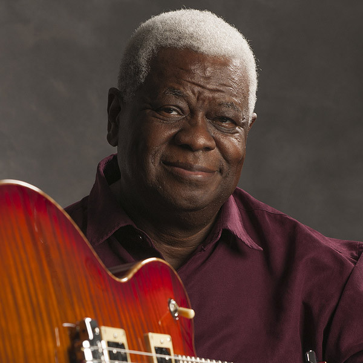

Abraham Laboriel é um baixista mexicano que já participou de mais de quatro mil gravações e trilhas sonoras. A revista Guitar Player o descreve como: "o mais versátil baixista de nossos tempos".
Inicialmente formado em violão clássico, ele mudou para o baixo enquanto estudava na Escola Berklee de Música. Henry Mancini (compositor, pianista e arranjador americano) incentivou Laboriel a se mudar para Los Angeles, Califórnia e seguir a carreira de músico.